Run Date
2026-03-25
Rendered from Stage-2 bundles dated 2026-03-24 to 2026-03-25.
Stage-2 scale ablation on RWTD binary texture partitioning with a shared tiny probe. The readout is coarse-dominant: fpn_2 carries the main signal, fpn_1 is a useful complement, and fpn_0 is weak enough to be harmful in this setting.
Stage-2 asks which SAM FPN scale actually carries the binary texture partition signal once everything else stays fixed. The answer is coarse-dominant: fpn_2 is the strongest single scale, fpn_1 is clearly weaker alone but improves the best run when paired with fpn_2, and fpn_0 is weak enough to hurt.
That matters because the best result is not “coarse only.” The winning configuration is the learned coarse+next-finer probe (fpn_2 + fpn_1, mIoU 0.9124, ARI 0.8452), while learned all-scale gating only partly recovers the same insight: it does learn fpn_2 > fpn_1 > fpn_0, but still loses to both fixed-uniform all-scale fusion and the simpler coarse+mid subset.
87684d25aviadcohz/RWTD · 227 evaluated cropsProjection dim 64, embedding dim 32, AdamW, 5 epochs, lr 1e-3, weight decay 1e-4.
Deterministic K-means, cosine distance, K=2, bilinear feature alignment, 512 pair samples per image.
3 single-scale controls, 2 all-scale fusion variants, 1 coarse+mid learned fusion, and 1 native fine-grid control.
fixed_uniform_gates_coarse_plus_next_finer is still absent, so the strongest subset has no fixed-weight companion yet.
fpn_2 + fpn_1 learned · ARI 0.8452fpn_2 only · ARI 0.8286fpn_2 > fpn_1 > fpn_0fpn_0 · ARI -0.1255| Rank | Variant | Levels Used | Clustering Grid | Gate Type | Final Gate Weights | Mean mIoU | Mean ARI | Takeaway |
|---|---|---|---|---|---|---|---|---|
| 1 best | fpn_2 + fpn_1 learned gates | fpn_2 + fpn_1 |
72x72 | learned global softmax | fpn_2=0.576 · fpn_1=0.424 |
0.9124 | 0.8452 | Best overall. Coarse signal stays dominant while fpn_1 adds complementary detail. |
| 2 | all scales, fixed uniform | fpn_2 + fpn_1 + fpn_0 |
72x72 | fixed uniform | fpn_2=0.333 · fpn_1=0.333 · fpn_0=0.333 |
0.9083 | 0.8381 | All-scale fusion helps, but the simpler uniform fusion still trails the best coarse+mid subset. |
| 3 | all scales, learned gates | fpn_2 + fpn_1 + fpn_0 |
72x72 | learned global softmax | fpn_2=0.430 · fpn_1=0.315 · fpn_0=0.256 |
0.9042 | 0.8303 | Learns coarse > mid > fine, but still underperforms fixed uniform all-scale fusion. |
| 4 | fpn_2 only | fpn_2 |
72x72 | single-scale fixed | fpn_2=1.000 |
0.9032 | 0.8286 | Strongest single scale. Coarsest SAM features already recover most of the binary partition. |
| 5 | fpn_1 only | fpn_1 |
144x144 | single-scale fixed | fpn_1=1.000 |
0.8212 | 0.6779 | Weaker alone than fpn_2, but useful when paired with the coarsest scale. |
| 6 | fpn_0 only, aligned | fpn_0 |
72x72 | single-scale fixed | fpn_0=1.000 |
0.7326 | 0.5311 | Weak even after alignment down to the coarse 72x72 grid. |
| 7 | fpn_0 only, native | fpn_0 |
288x288 | single-scale fixed | fpn_0=1.000 |
0.6545 | 0.4055 | Worst control. Native 288x288 fine-scale clustering degrades further instead of helping. |
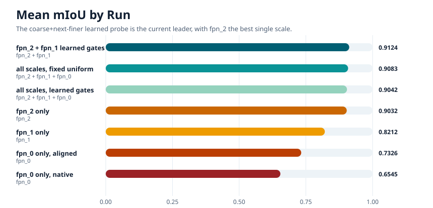
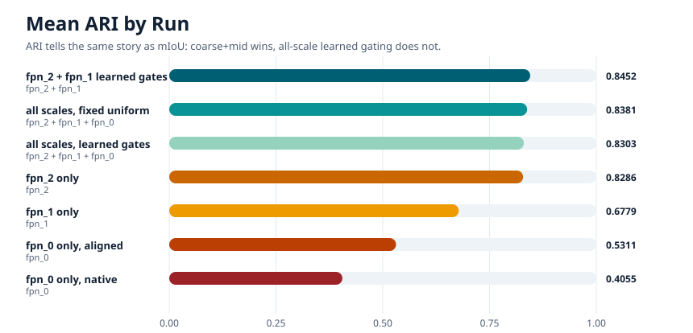
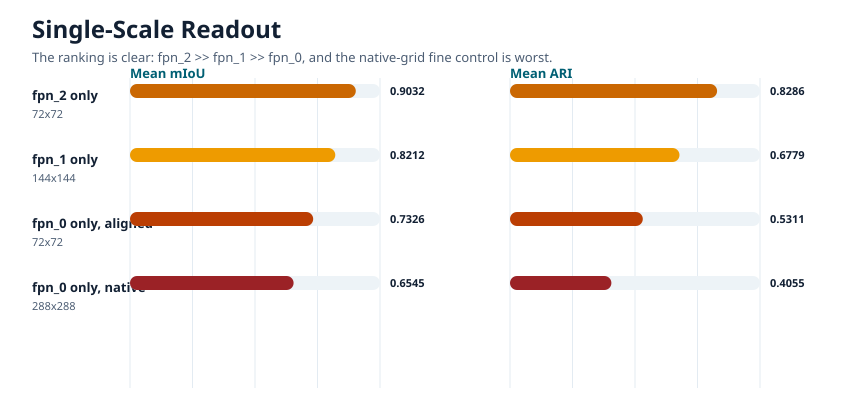
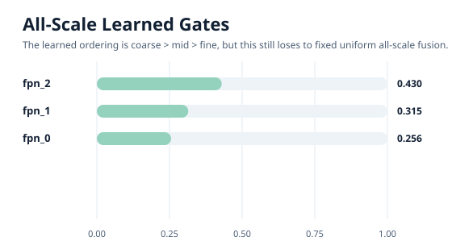
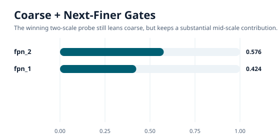
Each published panel is the run-emitted triptych: input, GT, and prediction. The selected crops below are chosen to make the coarse-dominant story easy to see at a glance.
fpn_2 misses the narrow bark-versus-moss seam here. fpn_1 alone is noisy, but adding it to fpn_2 restores the thin vertical partition cleanly.
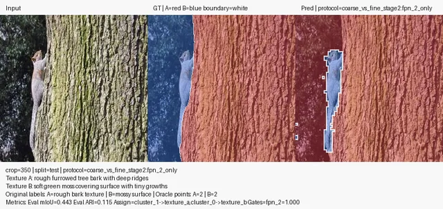
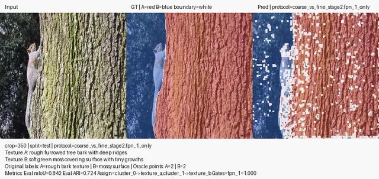
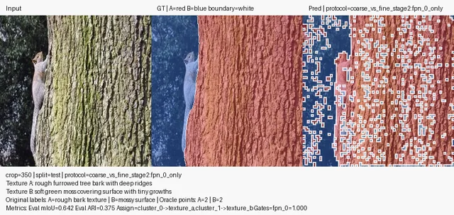
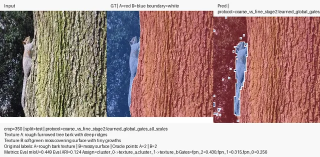
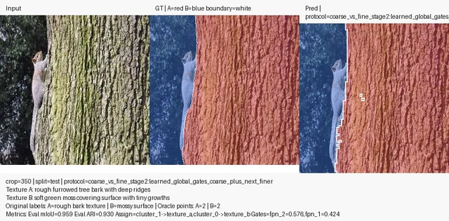
The learned all-scale gate already favors coarse > mid > fine, yet the explicit coarse+mid subset still edges it out. Even fixed-uniform all-scale fusion beats the learned all-scale variant here.
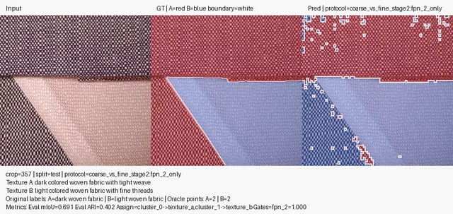
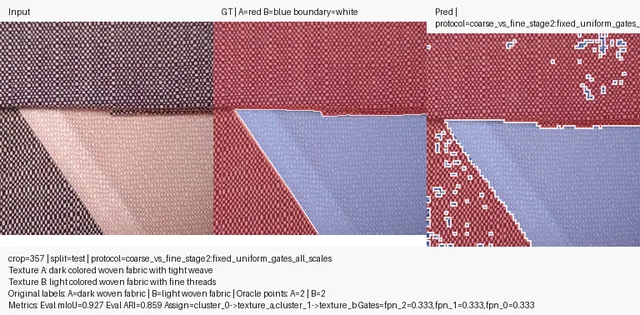
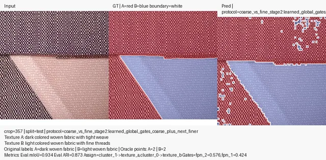
On this crop the coarsest scale is already nearly optimal. The best two-scale fusion barely moves the score, while the finer-only controls are still distinctly weaker.
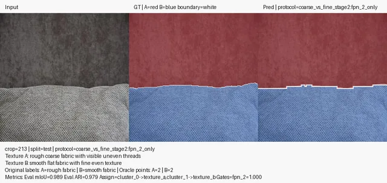
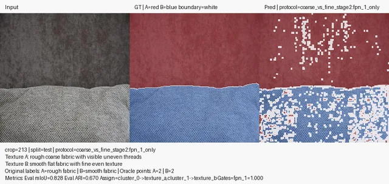
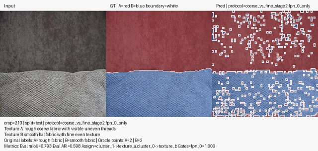
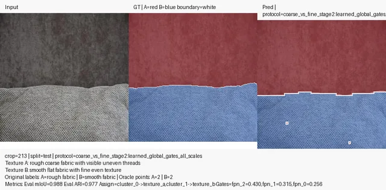
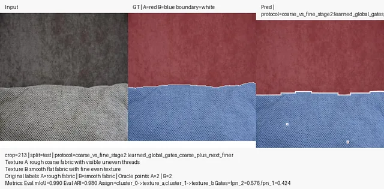
The finest scale is weak even after alignment to 72x72, and becomes worse at its native 288x288 grid. Coarse features still recover the semantic partition cleanly.
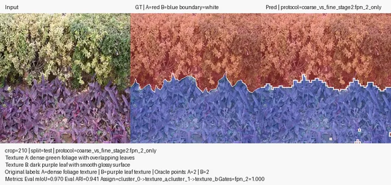
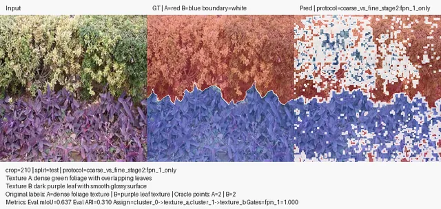
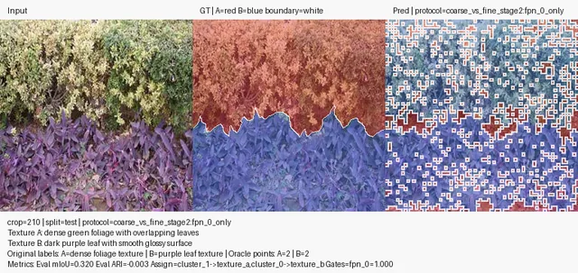
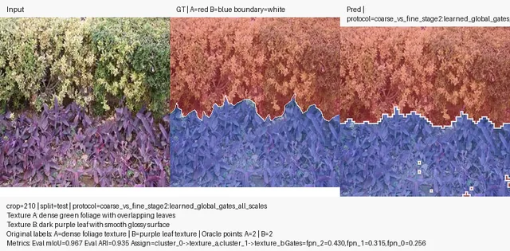
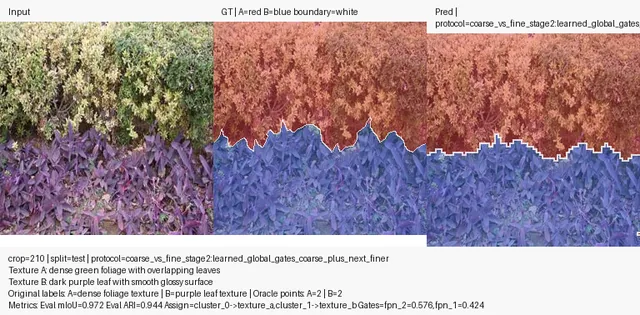
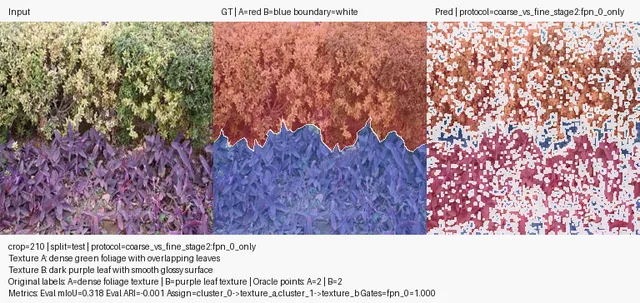
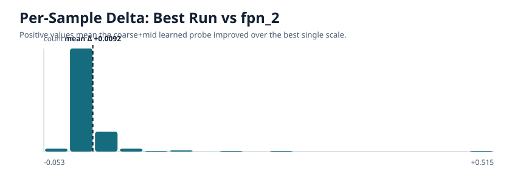
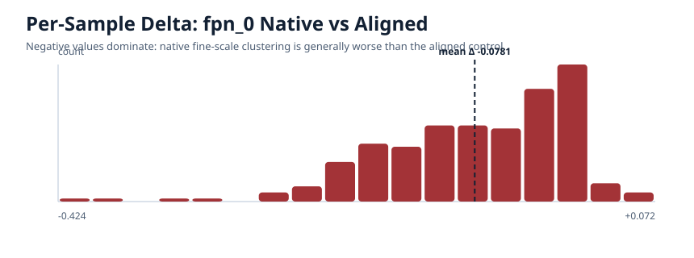
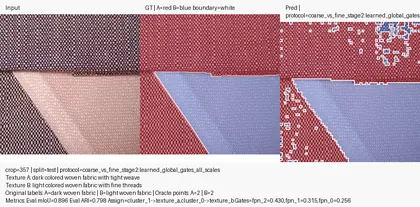
The coarsest SAM scale carries the main binary texture partition signal in this Stage-2 setting. The next-finer scale adds useful complementary structure, while the finest scale is not beneficial and can be actively detrimental, especially when clustered at its native resolution. The cleanest reading is therefore coarse-dominant rather than coarse-only: subset choice matters more than simply learning a softmax over all scales.
The best learned coarse+mid probe gains +0.0092 mIoU and +0.0166 ARI over fpn_2 alone.
The native fine-scale control drops -0.0781 mIoU and -0.1255 ARI relative to aligned fpn_0_only.
Even though learned all-scale gating settles on coarse > mid > fine, it still trails fixed-uniform all-scale fusion by +0.0041 mIoU and +0.0078 ARI.
metrics.json, summary.md, training_data.json, and assets/tables/summary_table.csv are published beside this page.
Each source run is copied into repro/<variant>/ with config.json, summary.json, summary.csv, and the per-sample manifests.
repro/source_runs.json
Includes source experiment roots, checkpoint paths, and page-local repro folders.